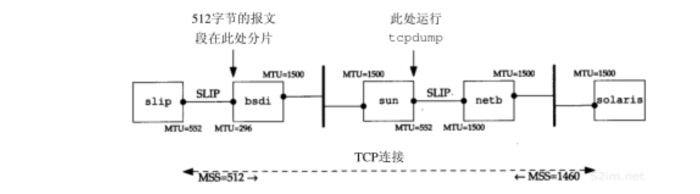
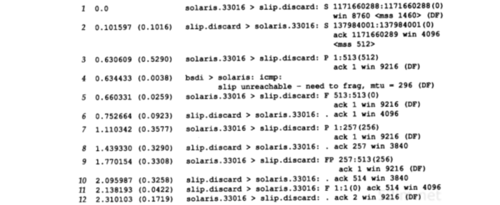
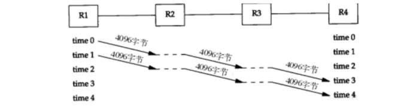
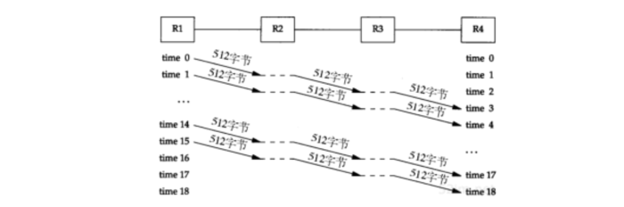
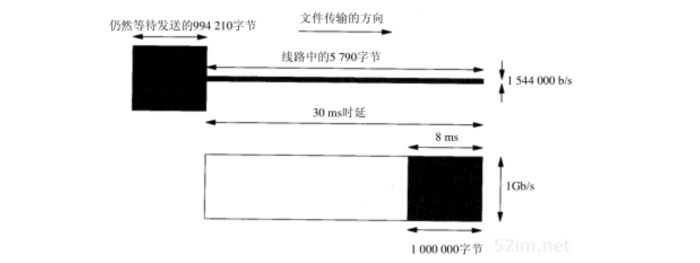
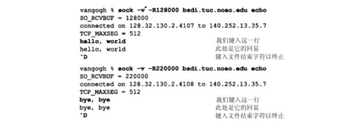
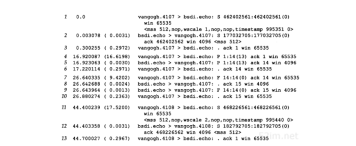

TCP：未来和性能
TCP已经在从1200b/s的拨号SLIP链路到以太数据链路上运行了许多年。在80年代和90年代初期，以太网是运行TCP/IP最主要的数据链路方式。虽然TCP在比以太网速率高的环境（如T2电话线、FDDI及千兆比网络）中也能够正确运行，但在这些高速率环境下，TCP的某些限制就会暴露出来
本章讨论TCP的一些修改建议，这些建议可以使TCP在高速率环境中获得最大的吞吐量：
- 讨论 路径MTU发现 机制，主要关注它如何与TCP协同工作。这个机制通常可以使TCP为非本地的连接使用大于536字节的MTU，从而增加吞吐量
- 接着介绍 宽带 管道，也就是那些具有很大的带宽时延乘积的网络，以及TCP在这些网络上所具有的局限性。为处理宽带管道，描述两个新的TCP选项：
- 窗口扩大 选项：用来增加TCP的最大窗口，使之超过65535字节
- 时间戳 选项：可以使TCP对报文段进行更加精确的RTT测量，还可以在高速率下对可能发生的序号回绕提供保护
- T/TCP ：为增加事务功能而对TCP进行的修改
- 通信的事务模式以客户的请求将被服务器应答的响应为主要特征。这是客户服务器计算的常见模型
- T/TCP的目的就是减少两端交换的报文段数量，避免三次握手和使用4个报文段进行连接的关闭，从而使客户可以在一个RTT和处理请求所必需的时间内收到服务器的应答
这些新选项中令人印象最深刻的就是它们与现有的TCP实现能够 向后兼容 即包括这些新选项的系统仍然可以与原有的旧系统进行交互。除了在一个ICMP报文中为路径MTU发现增加了一个额外字段之外，这些新的选项只需要在那些需要使用它们的端系统中进行实现
- 最后介绍近来发表的有关 TCP性能 的图例
路径MTU发现
曾经描述过 路径MTU 的概念。这是当前在两个主机之间的路径上任何网络上的最小MTU。路径MTU发现在IP首部中继承并设置 不要分片（DF）比特 来发现当前路径上的路由器是否需要对正在发送的IP数据报进行分片。在11.6节观察到如果一个待转发的IP数据报被设置DF比特，而其长度又超过了MTU，那么路由器将返回 ICMP不可达的差错 在11.7节显示了某版本的traceroute程序使用该机制来决定目的地的路径MTU。在11.8节看到UDP是怎样处理路径MTU发现的。在本节将讨论这个机制是如何按照RFC 1191中规定的那样在TCP中进行使用的
TCP的路径MTU发现按如下方式进行：
- 在连接建立时，TCP使用输出接口或对端声明的MSS中的最小MTU作为起始的报文段大小
- 路径MTU发现不允许TCP超过对端声明的MSS
- 如果对端没有指定一个MSS，则默认为536
- 一旦选定了起始的报文段大小，在该连接上的所有被TCP发送的IP数据报都将被设置DF比特
- 如果某个中间路由器需要对一个设置了DF标志的数据报进行分片，它就丢弃这个数据报，并产生一个ICMP的 不能分片 差错
- 如果收到这个ICMP差错，TCP就减少段大小并进行重传
- 如果路由器产生的是一个较新的该类ICMP差错，则报文段大小被设置为下一跳的MTU减去IP和TCP的首部长度
- 如果是一个较旧的该类ICMP差错，则必须尝试下一个可能的最小MTU
- 当由这个ICMP差错引起的重传发生时，拥塞窗口不需要变化，但要 启动慢启动
由于路由可以动态变化，因此在最后一次减少路径MTU的一段时间以后，可以尝试使用一个较大的值，直到等于对端声明的MSS或输出接口MTU的最小值 RFC 1191推荐这个时间间隔为10分钟
- 在对非本地目的地，默认的MSS通常为536字节，路径MTU发现可以避免在通过MTU小于576的中间链路时进行分片
- 对于本地目的主机，也可以避免在中间链路（如以太网）的MTU小于端点网络（如令牌环网）的情况下进行分片
- 但为了能使路径MTU更加有用和充分利用MTU大于576的广域网，一个实现必须停止使用为非本地目的制定的536的MTU默认值
- MSS的一个较好的选择是输出接口的MTU（当然要减去IP和TCP的首部大小），现在MTU的值一般是1500-40=1460
实例
在某个中间路由器的MTU比任一个端点接口MTU小的情况下，能够观察路径MTU发现是如何工作的。图24-1显示了这个例子的拓扑结构：

从主机solaris（支持路径MTU发现机制）到主机slip建立一个连接。在这里把slip接口的MTU设置为552，而不是通常的296。这使得slip通告一个512的MSS。但是在bsdi上的SLIP链路上的MTU为296，这就引起超过256的TCP报文段被分片。于是就可以观察在solaris上的路径MTU发现是如何进行处理的
在solaris上运行sock程序并向slip上的丢弃服务器进行一个512字节的写操作：
solaris$ sock -i -n1 -w512 slip discard
图24-2是在主机sun的SLIP接口上收集的tcpdump的输出结果：

- 第1和第2行：互相通告MSS值
- 第3行：solaris发送一个包含512字节的数据和对SYN的确认报文段
- 第4行：产生了一个ICMP差错，这是路由器bsdi产生较新的 包含输出接口MTU 的ICMP差错
- 第5行：在这个差错回到solaris之前，就发送了FIN
- 第6行：由于slip没有收到被路由器bsdi丢弃的512字节的数据，因此并不期望接收这个序号 513 所以用它期望的序号 1 进行了响应
- 第7和9行：ICMP差错返回到了solaris，solaris用两个256字节的报文段重传了512字节的数据
- 因为在bsdi后面可能还有具有更小的MTU的路由器，因此这两个报文段都设置了 DF比特
接着是一个较长的传输过程（持续了大约15分钟），在最初的512字节变为256字节以后，solaris没有再尝试使用更大的报文段
分组大小
常识来说较大的分组比较好，因为发送较少的大分组比发送较多的小分组 花费 要少 假定分组的大小不足以引起分片，否则会引起其他方面的问题 这些减少的花费与网络（分组首部负荷）、路由器（选路的决定）和主机（协议处理和设备中断）等有关。但并非所有的人都同意这种观点
通过4个路由器发送8192个字节，每个路由器与一个T1电话线（1544000b/s）相连。首先使用两个4096字节的分组，如图24-3所示：

问题在于路由器是 存储转发设备 它们通常接收整个输入分组，检验包含IP检验和的IP首部，进行选路判决，然后开始发送输出分组。在这个图中，可以假定在理想情况下这些在路由器内部进行的操作不花费时间（水平点状线）。然而，从R1到R4它需要花费4个单位时间来发送所有的8192字节。每一跳的时间为：
(4096 + 40) * 8 / 1544000 = 21.4ms/跳
其中，将TCP和IP的首部算为40字节，每个字节是8bit。发送数据的整个时间为分组个数加上跳数减1，从图中可以看到是4个单位时间 85.6秒 每个链路空闲2个单位时间 42.8秒
图24-4显示了发送16个512字节的分组时所发生的情况：

这将花费更多的单位时间，但是由于发送的分组较短，因此每个单位时间较小：
(512 + 40) * 8 / 1544000 = 2.9ms/跳
现在总时间为 (18×2.9) = 52.2ms 每个链路也空闲2个单位的时间即 5.8ms
在这个例子中，忽略了确认返回所需要的时间、连接建立和终止以及链路可能被其他流量共享等的影响
根据现有的测量表明： 分组并不一定是越大越好 需要在更多的网络上对该领域进行更多的研究
宽带管道
在20.7节，把一个连接的容量表示为
capacity (b) = bandwidth (b/s) * round-triptime (s)
并称之为带宽时延乘积。也可称它为两端的管道大小
当这个乘积变得越来越大时，TCP的某些局限性就会暴露出来。表24-5显示了多种类型的网络的某些数值：
| 网络 | 带宽(b/s) | rtt(ms) | 带宽时延乘积(字节=8b) |
| 以太局域网 | 10000000 | 3 | 3750 |
| 横跨大陆的T1电话线 | 1544000 | 60 | 11580 |
| 卫星T1电话线 | 1544000 | 500 | 96500 |
| 横跨大陆的T3电话线 | 45000000 | 60 | 337500 |
| 横跨大陆的gigabit线路 | 1000000000 | 60 | 7500000 |
可以看到带宽时延乘积的单位是字节，这是因为用这个单位来 测量每一端的缓存大小和窗口大小
具有大的带宽时延乘积的网络被称为 宽带网络 而一个运行在LFN上的TCP连接被称为 宽带管道 。管道可以被水平拉长（一个长的RTT），或被垂直拉高（较高的带宽），或向两个方向拉伸。使用宽带管道会遇到多种问题：
- TCP首部中窗口大小为16bit，从而将窗口限制在65535个字节内。但是从图24-5的最后一列可以看到，现有的网络需要一个更大的窗口来提供最大的吞吐量，介绍过的窗口扩大选项可以解决这个问题
- 在一个宽带网络LFN内的分组丢失会使吞吐量急剧减少。如果只有一个报文段丢失，需要利用21.7节介绍的快速重传和快速恢复算法来使管道避免耗尽。但是即使使用这些算法，在一个窗口内发生的多个分组丢失也会典型地使管道耗尽：如果管道耗尽了，慢启动会使它渐渐填满，但这个过程将需要经过多个RTT
RFC 1072中建议使用有选择的确认来处理在一个窗口发生的多个分组丢失 但是这个功能在RFC 1323中被忽略了，因为作者觉得在把它们纳入TCP之前需要先解决一些技术上的问题
- 许多TCP实现对每个窗口的RTT仅进行一次测量。它们并不对每个报文段进行RTT测量。在一个宽带网络LFN上需要更好的RTT测量机制。将在24.5节介绍时间戳选项，它允许更多的报文段被计时，包括重传
- TCP对每个字节数据使用一个32bit无符号的序号来进行标识
如果在网络中有一个被延迟一段时间的报文段，它所在的连接已被释放，而一个新的连接在这两个主机之间又建立了，怎样才能防止这样的报文段再次出现呢？ IP首部中的TTL为每个IP段规定了一个生存时间的上限（255跳或255秒，看哪一个上限先达到） 最大的报文段生存时间（MSL）作为一个实现的参数来阻止这种情况的发生 推荐的MSL的值为2分钟（给出一个240秒的2MSL），但是许多实现使用的MSL为30秒
在宽带网络LFN上，TCP的序号会碰到一个不同的问题。由于序号空间是有限的，在已经传输了4294967296个字节以后序号会被重用。如果一个包含序号N字节数据的报文段在网络上被迟延并在连接仍然有效时又出现，会发生什么情况呢？这仅仅是一个相同序号N在MSL期间是否被重用的问题，也就是说，网络是否足够快以至于在不到一个MSL的时候序号就发生了回绕。在一个以太网上要发送如此多的数据通常需要60分钟左右，因此不会发生这种情况。但是在带宽增加时，这个时间将会减少：一个T3的电话线(45Mb/s)在12分钟内会发生回绕，FDDI(100Mb/s)为5分钟，而一个千兆比网络(1000Mb/s)则为34秒。这时问题不再是带宽时延乘积，而在于带宽本身
将介绍一种对付这种情况的办法：使用TCP的时间戳选项的PAWS算法： 保护回绕的序号
千兆比网络
当网络的速率达到千兆比的时候，情况就会发生变化。先看一下在时延和带宽之间的差别
考虑通过美国发送一个100万字节的文件的情况，假定时延为30ms。图24-6显示了两种情况：上图显示了使用一个T1电话线(1544000b/s)的情况，而下图则是使用一个1Gb/s网络的情况。x轴显示的是时间，发送方在图的左侧，而接收方则在图的右侧，y轴为网络容量。两幅图中的阴影区域表示发送的100万字节：

图24-6显示了30ms后这两个网络的状态。经过30ms（延时）以后数据的第1个比特都已到达对端。但对T1网络而言，由于管道容量仅为5790字节，因此发送方仍然有994210个字节等待发送。而千兆比网络的容量则为3750000字节，因此，整个文件仅使用了25％左右的带宽，此时文件的最后一个比特已经到达第1个字节后8ms处
经过T1网络传输文件的总时间为5.211秒。如果增加更多的带宽，使用一个T3网络(45000000b/s)，则总时间减少到0.208秒 增加约29倍的带宽可以将总时间减小到约25分之一
使用千兆比网络传输文件的总时间为0.038秒：30ms的时延加上8ms的真正传输文件的时间。假定能够将带宽增加为2000Mb/s，只能够将总时间减小为0.304 ms：同样30ms的时延和4ms的真正传输时间。现在使带宽加倍仅能够将时间减少约10％。在千兆比速率下 时延限制 占据了主要地位，而带宽不再成为限制。
时延主要是由光速引起的，而且不能够被减小 考虑到分组需要建立和终止一个连接时，这个固定时延起的作用就更糟糕了。千兆比网络会引起一些需要不同看待的连网观点
窗口扩大选项
窗口扩大选项使TCP的窗口定义从16bit增加为32bit。这并不是通过修改TCP首部来实现的，TCP首部仍然使用16bit，而是通过定义一个 选项 实现对16bit的 扩大操作 来完成的。于是TCP在内部将实际的窗口大小维持为32bit的值：
在图18-20可以看到关于这个选项的例子。一个字节的移位记数器取值为 0 （没有扩大窗口的操作）和 14 这个最大值 14 表示窗口大小为 1073725440 字节(65535*214)
这个选项只能够出现在一个 SYN报文段 中，因此当连接建立起来后，在每个方向的扩大因子是固定的。为了使用窗口扩大，两端必须在它们的SYN报文段中发送这个选项 主动建立连接的一方在其SYN中发送这个选项，但是被动建立连接的一方只能够在收到带有这个选项的SYN之后才可以发送这个选项 每个方向上的扩大因子可以不同
如果主动连接的一方发送一个非零的扩大因子，但是 没有从另一端收到一个窗口扩大选项，它就将发送和接收的移位记数器置为0 这就允许较新的系统能够与较旧的、不理解新选项的系统进行互操作
RFC要求TCP接受在任何报文段中的一个选项（只有前面定义的一个选项，即最大报文段大小，仅在SYN报文段中出现） 它还进一步要求TCP忽略任何它不理解的选项。这就使事情变得容易，因为所有新的选项都有一个长度字段
假定我们正在使用窗口扩大选项，发送移位记数为 S 而接收移位记数则为 R 于是从 另一端收到的每一个16bit的通告窗口将被左移R位 以获得实际的通告窗口大小。每次当向对方发送一个窗口通告的时候，将 实际的32bit窗口大小右移S比特，然后用它来替换TCP首部中的16bit的值
TCP根据接收缓存的大小自动选择移位计数。这个大小是由系统设置的，但是通常向应用进程提供了修改途径
实例
如果在4.4BSD的主机vangogh.cs.berkeley.edu上使用sock程序来初始化一个连接，可以观察到它的TCP计算窗口扩大因子的情况。下面的交互输出显示的是两个连续运行的程序，第1个指定接收缓存为128000字节，而第2个的缓存则为220000字节：

图24-7显示了这两个连接的tcpdump输出结果：

- 第1行：vangogh通告一个65535的窗口，并通过设置移位计数为 1 来指明窗口扩大选项：
- 这个通告的窗口是比接收窗口(128000)还小的一个最大可能取值，因为在一个SYN报文段中的窗口字段从不进行扩大运算
- 扩大因子为1：vangogh发送窗口通告一直到131070(65535*21)，这将调节接收缓存的大小(128000)
- 第2行：bsdi在它的SYN中没有发送窗口扩大选项，因此这个选项没有被使用
注意：vangogh在随后的连接阶段继续使用最大可能的窗口65535
- 第12行：第2个连接vangogh请求的移位计数为 2
- 它希望发送窗口通告一直为262140(65535*22) 这比接收缓存(220000)大
时间戳选项
时间戳选项使发送方在每个报文段中放置一个时间戳值。接收方在确认中返回这个数值，从而允许发送方为每一个收到的ACK计算RTT
必须说是对每一个收到的ACK而不是每一个报文段，因为TCP通常用一个ACK来确认多个报文段
目前许多实现为每一个窗口只计算一个RTT，对于包含8个报文段的窗口而言这是正确的。然而，较大的窗口大小则需要进行更好的RTT计算
RFC 1323的3.1节给出了需要为较大窗口进行更好的RTT计算的信号处理的理由： 通常RTT通过对一个数据信号（包含数据的报文段）以较低的频率（每个窗口一次）进行采样来进行计算，这就将别名引入了被估计的RTT中 当每个窗口中有8个报文段时，采样速率为数据率的1/8，这还是可以忍受的 但是如果每个窗口中有100个报文段时，采样速率则为数据速率的1/100，这将导致被估计的RTT不精确，从而引起不必要的重传 如果一个报文段被丢失，则会使情况变得更糟！
图18-20显示了时间戳选项的格式：
- 发送方在 第1个字段中放置一个32bit的值
- 接收方在 应答字段中回显这个数值
- 包含这个选项的TCP首部长度将从正常的20字节增加为 32 字节
时间戳是一个单调递增的值。由于接收方只需要回显收到的内容，因此不需要关注时间戳单元是什么。这个选项 不需要在两个主机之间进行任何形式的时钟同步
RFC 1323推荐在1毫秒和1秒之间将时间戳的值加1 4.4BSD在启动时将时间戳始终设置为0，然后每隔500ms将时间戳时钟加1 在图24-7中，如果观察在报文段1和报文段11的时间戳，它们之间的差（89个单元）对应于每个单元500ms的规定，因为实际时间差为44.4秒
在连接建立阶段，对这个选项的规定与前一节讲的窗口扩大选项类似。主动发起连接的一方在它的SYN中指定选项。只有在它从另一方的SYN中收到了这个选项之后，该选项才会在以后的报文段中进行设置
接收方TCP不需要对每个包含数据的报文段进行确认，许多实现每两个报文段发送一个ACK。如果接收方发送一个确认了两个报文段的ACK，那么哪一个收到的时间戳应当放入回显应答字段中来发回去呢？
为了减少任一端所维持的状态数量，对于每个连接只保持一个时间戳的数值。选择何时更新这个数值的算法非常简单：
- TCP跟踪下一个ACK中将要发送的时间戳的值（一个名为 tsrecent 的变量）以及最后发送的ACK中的确认序号（一个名为 lastack 的变量）。这个序号就是接收方期望的序号
- 当一个包含有字节号 lastack 的报文段到达时，则该报文段中的时间戳被保存在 tsrecent 中
- 无论何时发送一个时间戳选项 tsrecent 就作为 时间戳回显应答字段 被发送，而 序号字段 被保存在 lastack 中
这个算法能够处理下面两种情况：
- 如果ACK被接收方迟延，则作为回显值的时间戳值应该对应于最早被确认的报文段。例如，如果两个包含1~1024和1025~2048字节的报文段到达，每一个都带有一个时间戳选项，接收方产生一个 ACK 2049 来对它们进行确认。此时，ACK中的时间戳应该是包含字节1~1024的 第1个报文段中的时间戳 这种处理是正确的，因为发送方在 进行重传超时时间的计算时，必须将迟延的ACK也考虑在内
- 如果一个收到的报文段虽然在窗口范围内但同时又是失序，这就表明前面的报文段已经丢失。当那个丢失的报文段到达时，它的时间戳（ 而不是失序的报文段的时间戳 ）将被回显。例如，假定有3个各包含1024字节数据的报文段，按如下顺序接收：包含字节1~1024的报文段1，包含字节2049~4072的报文段3和包含字节1025~2048的报文段2。返回的ACK应该是带有报文段1的时间戳的 ACK 1025 （一个正常的所期望的对数据的ACK）、带有报文段1的时间戳的 ACK 1025 （一个重复的、响应位于窗口内但却是失序的报文段的ACK），然后是带有报文段2的时间戳的 /ACK 3073/（不是报文段3中的较后的时间戳）。这与当报文段丢失时的对RTT估计过高具有同样的效果，但这比估计过低要好些。而且，如果最后的ACK含有来自报文段3的时间戳，它可以包括重复的ACK返回和报文段2被重传所需要的时间，或者可以包括发送方的报文段2的重传超时定时器到期的时间。无论在哪一种情况下 回显报文段3的时间戳将引起发送方的RTT计算出现偏差
尽管时间戳选项能够更好地计算RTT，它还为发送方提供了一种方法，以避免接收到旧的报文段，并认为它们是现在的数据的一部分
PAWS：防止回绕的序号
考虑一个使用窗口扩大选项的TCP连接，其最大可能的窗口大小为1千兆字节(230)
最大的窗口是65535 * 2^14，而不是2^16 * 2^14
但只比这个数值小一点点，并不影响这里的讨论
还假定使用了时间戳选项，并且由发送方指定的时间戳对每个将要发送的窗口加1（这是保守的方法。通常时间戳比这种方式增加得快）。表24-8显示了在传输6千兆字节的数据时，在两个主机之间可能的数据流。为了避免使用许多10位的数字，使用G来表示1073741824的倍数。还使用了tcpdump的记号，即用J:K来表示通过了J字节的数据，且包括字节K-1
| 时间 | 发送字节 | 发送序号 | 发送时间戳 | 接收 |
| A | 0G:1G | 0G:1G | 1 | 正确 |
| B | 1G:2G | 1G:2G | 2 | 正确，但有一个段丢失，并重发 |
| C | 2G:3G | 2G:3G | 3 | 正确 |
| D | 3G:4G | 3G:4G | 4 | 正确 |
| E | 4G:5G | 0G:1G | 5 | 正确 |
| F | 5G:6G | 1G:2G | 6 | 正确，但重发段又出现了 |
32bit的序号在时间D和时间E之间发生了回绕。假定一个报文段在时间B丢失并被重传。还假定这个丢失的报文段在时间E重新出现
这假定了在报文段丢失和重新出现之间的时间差小于MSL，否则这个报文段在它的TTL到期时会被某个路由器丢弃
正如前面提到的，这种情况只有在高速连接上才会发生，此时旧的报文段重新出现，并带有当前要传输的序号
使用时间戳可以避免这种情况。接收方将时间戳视为序列号的一个32bit的扩展。由于在时间E重新出现的报文段的时间戳为2，这比最近有效的时间戳小（5或6），因此PAWS算法将其丢弃
PAWS算法不需要在发送方和接收方之间进行任何形式的时间同步。接收方所需要的就是时间戳的值应该单调递增，并且每个窗口至少增加1
T/TCP
TCP提供的是一种 虚电路方式 的运输服务。一个连接的生存时间包括三个不同的阶段：
- 建立
- 数据传输
- 终止
这种虚电路服务非常适合诸如远程注册和文件传输之类的应用。但是，还有出现其他的应用进程被设计成使用事务服务。一个 事务 就是符合下面这些特征的一个客户请求及其随后的服务器响应：
- 应该避免连接建立和连接终止的开销，在可能的时候，发送一个请求分组并接收一个应答分组
- 等待时间应当减少到等于RTT与SPT之和。其中RTT为 往返 时间，而SPT则是 服务器处理请求 的时间
- 服务器应当能够检测出重复的请求，并且当收到一个重复的请求时不重新处理事务（避免重新处理意味着服务器不必再次处理请求，而是返回保存的、与该请求对应的应答）
一个使用这种类型服务的应用就是DNS服务，尽管DNS与服务器重新处理重复的请求无关
如今一个应用程序设计人员面对的一种选择是使用TCP还是UDP。TCP 提供了过多的事务特征 ，而UDP 提供的则不够 。通常应用程序使用UDP来构造 避免TCP连接的开销 ，而许多需要的特征 （如动态超时和重传、拥塞避免等）被放置在应用层 一遍又一遍的重新设计和实现
一个较好的解决方法是提供一个能够提供足够多的事务处理功能的运输层。在本节所介绍的事务协议被称为T/TCP
报文
大多数的TCP需要使用7个报文段来打开和关闭一个连接。现在增加三个报文段：
- 一个对应于请求
- 一个对应于应答和对请求的确认
- 第三个对应于对应答的确认
如果额外的控制比特被追加到报文段上，比如 第1个报文段带有SYN、客户请求和FIN 客户仍然能够看到一个2倍的RTT与SPT之和的最小开销
与数据一起发送一个SYN和FIN是合法的，当前的TCP是否能够正确处理它们是另外一个问题
另一个与TCP有关的问题是TIME _ WAIT状态和它需要的2MSL的等待时间。这使两个主机之间的事务率降低到每秒268个
T/TCP为处理事务而需要进行的两个改动是避免三次握手和缩短WAIT _ TIME状态。T/TCP通过使用加速打开来避免三次握手：
- 它为打开的连接指定一个32bit的 连接计数 CC ，无论主动打开还是被动打开。一个主机的CC值从一个全局计数器中获得，该计数器每次被使用时加1
- 在两个使用T/TCP的主机之间的每一个报文段都包括一个新的TCP选项CC。这个选项的长度为6个字节，包含发送方在该连接上的32bit的CC值
- 一个主机维持一个缓存，该缓存保留每个主机上一次的CC值，这些值从来自这个主机的一个可接受的SYN报文段中获得
- 当在一个开始的SYN中收到一个CC选项的时候，接收方比较收到的值与为该发送方缓存的CC值:
- 如果接收到的CC比缓存的大，则该SYN是新的 ，报文段中的任何数据被传递给接收应用进程（服务器）。这个连接被称为 半同步
- 如果接收的CC比缓存的小，或者接收主机上没有对应这个客户的缓存CC 则执行正常的TCP三次握手过程。
- 为响应一个开始的SYN，带有SYN和ACK的报文段在另一个被称为 CCECHO 的选项中 回显所接收到的CC值
- 在一个非SYN报文段中的CC值检测和拒绝来自同一个连接的前一个替身的任何重复的报文段
这种”加速打开“避免了使用三次握手的要求，除非客户或者服务器已经崩溃并重新启动 这样做的代价是服务器必须记住从每个客户接收的最近的CC值
基于在两个主机之间测量RTT来动态计算TIME _ WAIT的延时，可以缩短TIME _ WAIT状态。TIME _ WAIT时延被设置为8倍的重传超时值RTO
过程
通过使用这些特征，最小的事务序列是交换三个报文段：
- 由一个主动打开引起的客户到服务器：
- 客户的SYN
- 客户的数据（请求）
- 客户的FIN
- 客户的CC
- 当被动的服务器接收到这个报文段的时候，如果客户的CC比为这个客户缓存的CC要大，则客户的数据被传送给服务器应用程序进行处理
- 服务器到客户：
- 服务器的SYN
- 服务器的数据（应答）
- 服务器的FIN
- 对客户的FIN的ACK
- 服务器的CC
- 客户的CC的CCECHO
- 由于TCP的确认是累积的，这个对客户的FIN的ACK也对客户的SYN、数据及FIN进行了确认。当客户TCP接收到这个报文段，就将其传送给客户应用进程
- 客户到服务器：
- 对服务器的FIN的ACK
- 确认了服务器的SYN
- 数据
- FIN
- 客户对它的请求的响应时间为RTT与SPT的和
优点
许多关于实现这个TCP选项的很好的地方。归纳如下：
- 服务器的SYN和ACK（第2个报文段）必须被迟延，从而允许应答与它一起捎带发送（通常对SYN的ACK是不迟延的）。但它也不能迟延得太多，否则客户将超时并引起重传
- 请求可以需要多个报文段，但是服务器必须对它们可能失序达到的情况进行处理
- 通常当数据在SYN之前到达时，该数据被丢弃并产生一个复位。通过使用T/TCP，这些失序的数据将放入队列中处理
- API必须使服务器进程用一个单一的操作来发送数据和关闭连接，从而允许第二个报文段中的FIN与应答一起捎带发送
- 通常应用进程先写应答，从而引起发送一个数据报文段，然后关闭连接，引起发送FIN
- 在收到来自服务器的MSS通告之前，客户在第1个报文段中正在发送数据
- 为避免限制客户的MSS为536，一个给定主机的MSS应该与它的CC值一起缓存
- 客户在没有接收到来自服务器的窗口通告之前也可以向服务器发送数据
- T/TCP建议默认的窗口为4096，并且也为服务器缓存拥塞门限
- 使用最小3个报文段交换，在每个方向上只能计算一个RTT。加上包括了服务器处理时间的客户测量RTT
- 这意味着被平滑的RTT及其方差的值也必须为服务器缓存起来
T/TCP的特征中吸引人的地方在于它对现有协议进行了最小的修改，同时又兼容了现有的实现。它还利用了TCP中现有的工程特征（动态超时和重传、拥塞避免等），而不是迫使应用进程来处理这些问题
一个可作为替换的事务协议是通用报文事务协议VMTP，该协议在RFC 1045中进行了描述。与T/TCP是现有协议的一个小的扩充不同，VMTP是使用IP的一个完整的运输层。VMTP处理差错检测、重传和重复压缩。它还支持多播通信
缺点
存在严重的安全性问题：T/TCP的实现在三步握手的第一步中同时发送SYN、数据、FIN，会导致在 syn flood 攻击中，三步握手的第一步会令服务器要保留更多的数据，占用了服务器更多的资源
TCP的性能
在80年代中期出版的数值显示出TCP在一个以太网上的吞吐量在每秒100,000~200,000字节之间。从那时起事情已经发生了许多改变。现在通常每秒可以传输800,000字节或者更快
在10Mb/s的以太网上计算能够观察到的理论上的TCP最大吞吐量是一件值得做的练习。可以在表24-9中看到这个计算的基础，显示了满长度的数据报文段和一个ACK交换的全部的字节：
| 字段 | 数据（字节） | ACK（字节） |
| 以太网前导 | 8 | 8 |
| 以太网目的地址 | 6 | 6 |
| 以太网源地址 | 6 | 6 |
| 以太网类型字段 | 2 | 2 |
| IP首部 | 20 | 20 |
| TCP首部 | 20 | 20 |
| 用户数据 | 1460 | 0 |
| 填充字符 | 0 | 6 |
| 以太网CRC校验 | 4 | 4 |
| 分组间隙（9.6ms） | 12 | 12 |
| 总计 | 1538 | 84 |
首先假定发送方传输两个背对背、满长度的数据报文段，然后接收方为这两个报文段发送一个ACK。于是最大的吞吐量（用户数据）为：
如果TCP窗口开到它的最大值（65535，不使用窗口扩大选项），这就允许一个窗口容纳44个1460字节的报文段。如果接收方每个报文段发送一个ACK，则计算变为：
这就是理论上的限制，并做出某些假定：
- 接收方发送的一个ACK没有和发送方的报文段之一在以太网上发生冲突
- 发送方可按以太网的最小间隔时间来发送两个报文段
- 接收方可以在最小的以太网间隔时间内产生一个ACK
不论在这些数字上多么乐观，在一个以太网上使用标准的多用户工作站，测量到了一个连续的1,075,000字节/秒的速率，这个值在理论值的90％之内
当移到更快的网络上时，如FDDI(100Mb/s)，三个商业厂家已经演示了在FDDI上的TCP在80Mb/s~90Mb/s之间。即使在有更多带宽的环境下，两个Gray Y-MP计算机在一个800Mb/s的HIPPI通道上最大值为781Mb/s，而运行在一个Gray Y-MP上的使用环回接口的两个进程间的速率为907Mb/s
下面这些实际限制适用于任何的实际情况：
- 不能比最慢的链路运行得更快
- 不能比最慢的机器的内存运行得更快。这假定实现是只使用一遍数据。如果不是这样，实现使用一遍数据是将它从用户空间复制到内核中，而使用另一遍数据是计算TCP的检验和，那么将运行得更慢
- 不能够比由接收方提供的窗口大小除以往返时间所得结果运行得更快，这就是带宽时延乘积公式，使用窗口大小作为带宽时延乘积
所有这些数字的重要意义：就是TCP的最高运行速率的真正上限是由 TCP的窗口大小和光速决定的，许多协议性能问题在于实现中的缺陷而不是协议所固有的一些限制